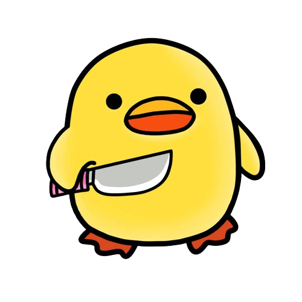

FMS не е съпорт
This extension enhances the 'new resulting tool' by adding several features:
- IR Games Toggle: Easily show or hide IR games.
- Notes functionality: Create, view, and manage notes directly within the extension.
- Event Tracker Button: Quickly check the event tracker with a single click.